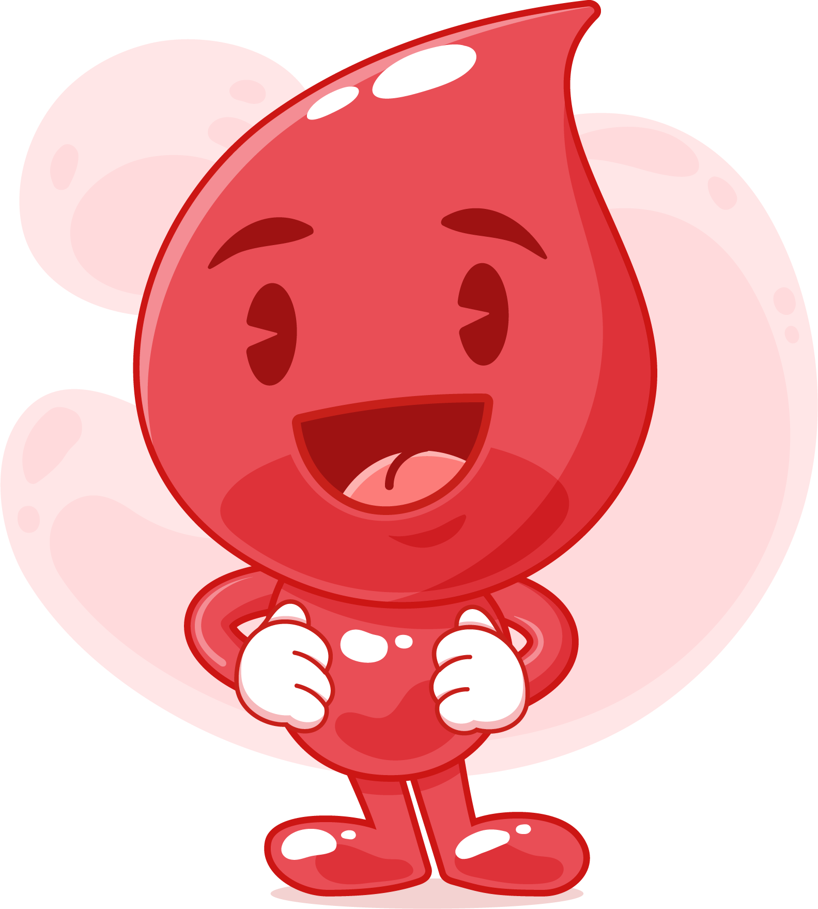

Image by Freepik
Confirm eligibility before going to the donation center.
Drink water for smoother blood flow during donation.
Have an iron and protein-rich meal for energy.
Bring valid ID for verification at the center.
Relax, snack, and hydrate after donating for recovery.

Eat a nutritious meal before your appointment, focusing on iron and protein-rich foods.
Follow healthcare professionals' guidelines for post-donation care.
Share medical info with staff for eligibility assessment.
Feel free to inquire about the donation process.
Stay calm; the process is usually quick, and your comfort matters.
Relax for a few minutes in our refreshment & recovery area.
The gratification of giving blood is a feeling you'll want to share.
Drink an extra four (8 oz.) glasses of liquids and avoid alcohol over the next 24 hours.
Rest and avoid strenuous activity post-donation to aid recovery.
Watch for dizziness, nausea, or lightheadedness; report symptoms to staff.
Avoid alcohol for 24 hours after your donation.